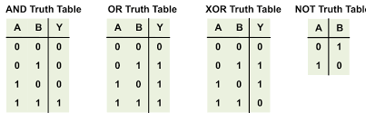

An algorithm typically means ‘code’ that solves a problem. Designing an algorithm often requires you to learn the Tech first and then consider how you design your code and algorithms. Code design can take many iterations.
Truth Tables
My topic for this blog is Truth Tables. The illustration that follows displays the results of logical operators AND, OR, XOR, NOT versus binary 1 and 0. The output produces a ‘Truth Table’.

Exploring Truth Tables operations
Exploration of this topic requires searching the language for logical operators, then figuring out how to display condition and test result. - Bitwise operations for Truth Tables typically represent 1 - True and 0 - False. - Logical expression in iteration and selection statements result in True or False
My objective is Truth Tables. But in my exploration I did both Truth Table and Expression syntax
# Bitwise Testsprint("OR")print( "1 | 0 = ", 1|0)print( "~(1 | 0) = ", ~(1|0) %2) # 1 is an integer, not a bit so remainder (modulo) does trickprint("AND")print( "1 & 0 = ", 1&0)print( "~(1 & 0) = ", ~(1&0) %2) # modulo againprint("XOR")print( "1 ^ 1 = ", 1^1)print()# Boolean Testsprint("Boolean OR")print( "True or False = ", TrueorFalse)print("Boolean AND")print( "True and False = ", TrueandFalse)print("Boolean XOR")print( "True != True = ", True!=True)
OR
1 | 0 = 1
~(1 | 0) = 0
AND
1 & 0 = 0
~(1 & 0) = 1
XOR
1 ^ 1 = 0
Boolean OR
True or False = True
Boolean AND
True and False = False
Boolean XOR
True != True = True
Algorithm 1
This algorithm focuses on small reusable procedures/functions (def) for bitwise tests. From the exploratory experience above it seems like a lot of typing would be necessary to represent possibilities.
import operator # functions for all comparisons, logical operations, mathematical operations and sequence operations# builds truth tabledef truth_options(): a_opts = [1, 0] b_opts = [1, 0]return [(a, b) for a in a_opts for b in b_opts] # double for permutes options# provides equivalent function lookup for bitwise using operator functionsdef bitwise_options(op): ops = {'&': operator.and_,'|': operator.or_,'^': operator.xor}return ops[op]# control/eval for bitwise operators, selection is based on number of operatorsdef bitwise_eval(op, op2=""):if op2 =="": op_func = bitwise_options(op)print(f"Bitwise {op}")for a, b in truth_options():print(f"{a}{op}{b} is {op_func(a, b)}")else: op2_func = bitwise_options(op2)print(f"Bitwise {op}")for a, b in truth_options():print(f"{op}({a}{op2}{b}) is {(1, 0)[op2_func(a, b)]}") # opposite: index 0 returns 1, index 1 return 0def method1(): bitwise_eval("&") bitwise_eval("NAND", "&") bitwise_eval("|") bitwise_eval("NOR", "|") bitwise_eval("^")# call bitwise evaluation of truth tableif__name__=="__main__":print("***** Method 1 *****") method1()
***** Method 1 *****
Bitwise &
1 & 1 is 1
1 & 0 is 0
0 & 1 is 0
0 & 0 is 0
Bitwise NAND
NAND(1 & 1) is 0
NAND(1 & 0) is 1
NAND(0 & 1) is 1
NAND(0 & 0) is 1
Bitwise |
1 | 1 is 1
1 | 0 is 1
0 | 1 is 1
0 | 0 is 0
Bitwise NOR
NOR(1 | 1) is 0
NOR(1 | 0) is 0
NOR(0 | 1) is 0
NOR(0 | 0) is 1
Bitwise ^
1 ^ 1 is 0
1 ^ 0 is 1
0 ^ 1 is 1
0 ^ 0 is 0
Truth Table - Algorithm 2
This algorithm above seemed to me to lose clarity with all the functions. The second attempt focuses on truth tables as a linear sequence, with loops for required repetitions. This seemed more understandable to me than my 1st attempt.
# each bitwise operator is iterated through truth table def method2(): truth_table = [[1,1], [1,0], [0,1], [0,0]]for a, b in truth_table:print(f"and {a} & {b}: {a & b}")for a, b in truth_table:print(f"nand ~({a} & {b}): {((a & b) +1) %2}") # warning: ~ negates entire integer without modulofor a, b in truth_table:print(f"or {a} | {b}: {a | b}")for a, b in truth_table:print(f"nor ~({a} | {b}): {((a | b) +1) %2}") # warning: see abovefor a, b in truth_table:print(f"xor {a} ^ {b}: {a ^ b}")# call bitwise evaluation of truth tableif__name__=="__main__":print("***** Method 2 *****") method2()
***** Method 2 *****
and 1 & 1: 1
and 1 & 0: 0
and 0 & 1: 0
and 0 & 0: 0
nand ~(1 & 1): 0
nand ~(1 & 0): 1
nand ~(0 & 1): 1
nand ~(0 & 0): 1
or 1 | 1: 1
or 1 | 0: 1
or 0 | 1: 1
or 0 | 0: 0
nor ~(1 | 1): 0
nor ~(1 | 0): 0
nor ~(0 | 1): 0
nor ~(0 | 0): 1
xor 1 ^ 1: 0
xor 1 ^ 0: 1
xor 0 ^ 1: 1
xor 0 ^ 0: 0
Linear Sequence of code
The order of executions is strictly from top to bottom. This is good for learning, but is typically a poor method for an Algorithm! This was my 1st exploration above.
Procedure (Function)
A Procedure is a set of code instructions that has been abstracted into logical parts. Each code abstraction is called “Procedural Abstraction”.
- In Python, using procedures (def) means you are starting to write “good” code vs “bad” code, mostly in terms of reusability of logic. - A procedure needs to be activated or called, this is performed in the main selections above.
Hacks
As we explore the algorithm Unit students will be designing lessons and homework. Each lesson will have Hacks. Here are some hacks that could go with the lesson above. The three weeks after Thanksgiving will be focused on this activity and build personal portfolio.
Try to build a Truth Table as shown above in Python, but switch to JavaScript… - Begin by showing understanding of problem using console.log, this problem can be done in Jupyter Notebook - Build a Truth Table in JavaScript showing output in HTML, this problem is best in FastPages
Pick your Algorithmic hack, build in Python and JavaScript. Here are some ideas.. - Binary to Hexadecimal to Decimal conversions - Fibonacci - Palindrome - Other
Come up with a Procedure/Function that show…
- Data Abstraction - Procedural Abstraction - Algorithm using iteration and selection - Frontend / Backend, using an API and persistent storage